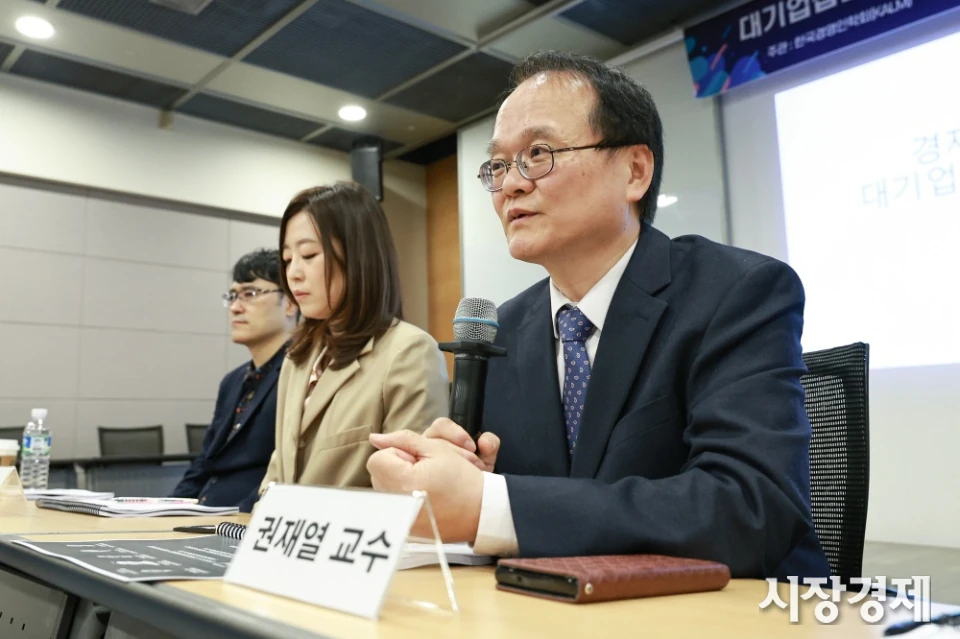
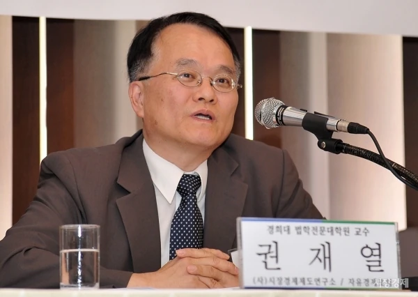
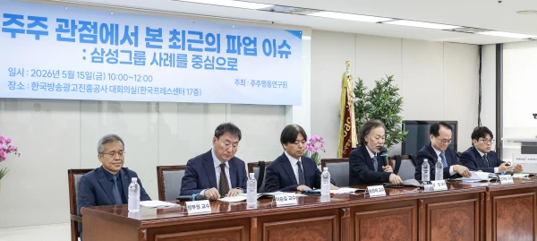

(이용 허락 원본)

(이용 허락 원본)

(이용 허락 원본)
사진 출처 · 뉴스1(news1.kr) · 시장경제(meconomynews.com) · 아이러브PC(ilovepc.co.kr)
00 연구소장 소개
권재열
한국주주총회연구소 초대 소장경희대학교 법학전문대학원 교수
상법 · 회사법의 학문적 전문성과
전자주주총회 제도 · 실무 연구 경험
법제 · 사법
- 법무부 상법 특별위원회 위원 역임
- 상법 시행령 제정 TF 위원장 역임
- 대법원 재판연구관 역임
학계
- 경희대학교 법학전문대학원 원장 역임
- 한국상사판례학회 회장 역임
전자주주총회 연구
01 제도 환경

주주총회 제도의 전환과
전문연구의 필요성
주주총회를 둘러싼 법률 · 제도 · 운영 환경의 구조적 변화에 대응하는 전문연구의 필요성이 커지고 있습니다.
01
법률 · 제도 환경의 변화- 상법 개정
- 전자주주총회 도입
- 기업지배구조 제도의 변화
02
주주권 행사구조의 복잡화- 주주참여 확대
- 기관투자자 의결권 행사
- 경영권 분쟁 증가
03
주주총회 운영방식의 고도화- 현장 · 온라인 병행
- 디지털 의결권 행사
- 운영절차의 복잡성 증대
법률과 제도에 대한 연구를 실제 주주총회 운영 현장의 문제 해결과 연결하는 전문연구 기반이 필요합니다.
02 사명과 연구영역
한국주주총회연구소의 사명과 연구영역
주주총회 제도의 합리적 발전과 주주권 행사의 실효성 제고를 위한 전문연구
사명법률 · 제도에 대한 학술적 연구와 주주총회 운영 현장의 실증적 분석을 결합하여, 기업과 주주 모두에게 필요한 전문 지식과 연구 성과를 제공합니다.
01
법률 · 제도 및 판례 연구상법 · 자본시장법
관련 판례 및 법리 · 국내외 제도 비교
02
주주권 및 의결권 연구주주권 행사 · 의결권 구조
기관투자자 및 실질주주
03
주주총회 운영 · 실증 연구운영실태 · 전자주주총회
참여 및 결의 데이터 분석
03 연구사업
주요 연구사업 및 연구성과 확산
연구 · 조사에서 지식 공유와 현장 활용까지 이어지는 연구활동
01
법률 · 제도 및 판례 연구상법 개정, 국내외 주주총회 법제, 주요 판례 및 제도 변화 연구
추진 성과물쟁점 연구보고서 · 법률 · 제도 분석자료
02
운영실태 및 사례 조사상장회사 주주총회 운영현황, 의결권 행사, 주주참여 실태 분석
추진 성과물운영실태 조사보고서 · 사례 분석자료
03
연구성과 발간 및 정보 제공주주총회 주요 현안에 관한 학술 · 실무 연구 성과 공유
추진 성과물이슈 브리프 · 실무 해설자료
04
전문가 교류 및 학술활동학계 · 법조계 · 기업 실무자 간 공동연구와 전문적 논의 활성화
추진 활동세미나 · 학술포럼 · 전문가 간담회
연구 성과가 주주총회 현장의 합리적 의사결정에 기여할 수 있도록 하겠습니다.
04 2027 연구과제
2027년 핵심 연구과제
전자주주총회 제도의 본격적인 시행에 대응한 법률 · 실무 · 운영 쟁점 집중 연구
01
운영
전자주주총회 운영성과 및주주참여 실효성 연구
운영실태 분석·주주참여 효과·제도 실효성
02
법률
의결권 행사구조 및주주총회 결의의 적법성 연구
집중투표 · 의결권 제한·통합 집계·결의 적법성
03
국제 의결권
실질주주 · 글로벌 기관투자자의의결권 행사체계 연구
실질주주 권리 확인·글로벌 투표 전달·행사 권한 검증
04
분쟁
주주총회의 절차적 공정성 및분쟁 예방 연구
주주권 보호·경영권 분쟁·결의 하자 · 운영위험
기업에는 합리적인 운영의 방향을, 주주에게는 실질적인 권리 행사에 필요한 연구를 제공하겠습니다.